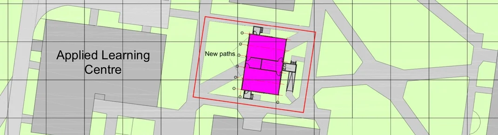

New build blunder - Cramlington school builds classrooms without permission
11TH SEP 2023
CramlingtonNews Editors
New temporary classrooms at Cramlington Learning Village started construction before planning permission accepted.

Northumberland County Council's education department has been criticised by councillors after temporary classrooms were installed at a Cramlington school before planning permission was received.
The plans were approved by a committee on Wednesday - but members were unhappy that work had already gotten underway before they had been given the opportunity to scrutinise the plans.
The work has seen a temporary single story double classroom installed at Cramlington Learning Village, with the extra capacity for year seven pupils needed while work to construct a new school is ongoing.
Speaking at Wednesday's meeting of the Cramlington, Bedlington and Seaton Valley Local Area Committee, Coun. Malcolm Robinson voiced his annoyance at the move.
He said: "There is a problem with the system here somewhere - this is the second school that has done it. I'm used to developers riding roughshod over the planning department but it's bad when the education department is doing it as well"
The classrooms will be staying until September 2026, when all existing CLV buildings are being demolished.